One of the Greatest Footballers of All Time
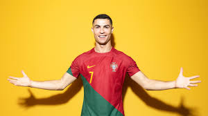
Cristiano Ronaldo dos Santos Aveiro, born on February 5, 1985, in Funchal, Madeira, Portugal, wasn't destined for an ordinary life. The youngest of four children, Ronaldo's talent for football shone through from a young age. He honed his skills on the streets of Madeira, playing for local clubs like Andorinha and Nacional. At just 12, his exceptional talent caught the eye of Sporting CP, who signed him for a mere £1,500. This marked the beginning of an extraordinary journey. Sporting became Ronaldo's launching pad. His dazzling skills and athleticism quickly propelled him through the club's youth ranks. In 2002, at the tender age of 17, he made his debut for the first team, captivating audiences with his mesmerizing dribbling, powerful shots, and acrobatic goals. His performances caught the attention of Manchester United, who snapped him up in 2003 for a then-record fee for a teenager. Under the guidance of Sir Alex Ferguson, Ronaldo blossomed into a global superstar. He became the epitome of the modern attacking winger, combining dazzling skill with ruthless efficiency. His trophy cabinet began to overflow with Premier League titles, FA Cups, and the prestigious Champions League. In 2008, he reached his zenith, winning the Ballon d'Or – the award for the world's best footballer – for the first time. In 2009, Ronaldo embarked on a new chapter, joining Real Madrid for a world-record transfer fee. He quickly established himself as a legend at the club, shattering scoring records and leading them to two Champions League titles, two La Liga crowns, and numerous other trophies. His rivalry with Lionel Messi became one of the greatest sporting narratives of the decade, pushing both players to new heights. In 2018, Ronaldo sought a new challenge, signing for Italian giants Juventus. He continued his dominance, winning two Serie A titles and a Coppa Italia. He also became the first player to win the Champions League with five different clubs, solidifying his legacy as one of the greatest players of all time.
| Full Name | Cristiano Ronaldo dos Santos Aveiro |
|---|---|
| Date of Birth | 3 February 1985(age 38) |
| Place of Birth | Fuchal,Madeira,Portugal |
| height | 1.87m (6ft 2in) |
| Positon(s) | Forward |
| Current Team | AI Nassr |
| Number | 7 |
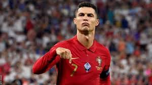
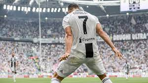
Ronaldo has achieved numerous milestones throughout his illustrious career...
Early Heartbreaks: Before finding lasting love, Ronaldo had several public relationships, some enduring longer than others. His early romances with Merche Romero and Jordana Jardel garnered media attention, but didn't last the test of time. Irina Shayk and the Golden Couple Era: In 2010, Ronaldo started dating Russian model Irina Shayk. Their relationship, spanning five years, was dubbed the "Golden Couple" era, with both achieving immense success in their respective fields. However, despite public appearances and shared passion for fashion, they eventually drifted apart, citing differences in personalities and career priorities. Georgina Rodriguez and Finding Home: In 2016, Ronaldo met Georgina Rodriguez, a Spanish model, at a Gucci store. Their connection was instant, and soon they became inseparable. Rodriguez has not only become Ronaldo's partner but also a pillar of support for his family. They have one daughter together, Alana Martina, and Ronaldo is the father of Cristiano Jr., twins Eva and Mateo (born via surrogacy), making Rodriguez a loving stepmother figure.
Ronaldo's career spans multiple top clubs and international success with the Portuguese national team...
| Years | Team | Apps | Goals |
|---|---|---|---|
| 2002-2003 | Sporting CP B | 2 | 0 |
| 2002-2003 | Sporting CP | 25 | 3 |
| 2003-2009 | Manchaster United | 196 | 84 |
| 2009-2018 | Real Madrid | 292 | 311 |
| 2018-2021 | Juventus | 98 | 81 |
| 2021-2022 | Manchaster United | 40 | 19 |
| 2022- | AI Nassr | 31 | 30 |
| Years | Team | Apps | Goals |
|---|---|---|---|
| 2001-2002 | Portugal | 9 | 7 |
| 2003 | Portugal U17 | 7 | 5 |
| 2002-2003 | Portugal U21 | 10 | 3 |
| 2004 | Portugal U23 | 3 | 2 |
| 2003- | Portugal | 205 | 128 |
In 2009, Ronaldo made a high-profile transfer to Real Madrid for what was then a world-record transfer fee. His time at Real Madrid was marked by incredible success, including four Champions League titles and becoming Real Madrid's all-time leading goal scorer. Ronaldo also won four Ballon d'Or awards during his tenure with the club.
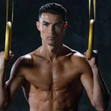
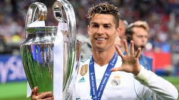
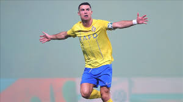
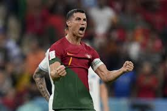
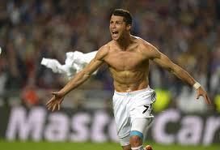
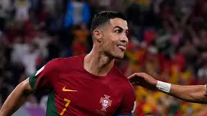
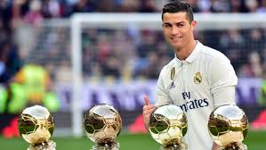
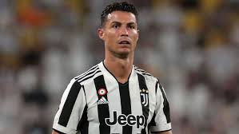